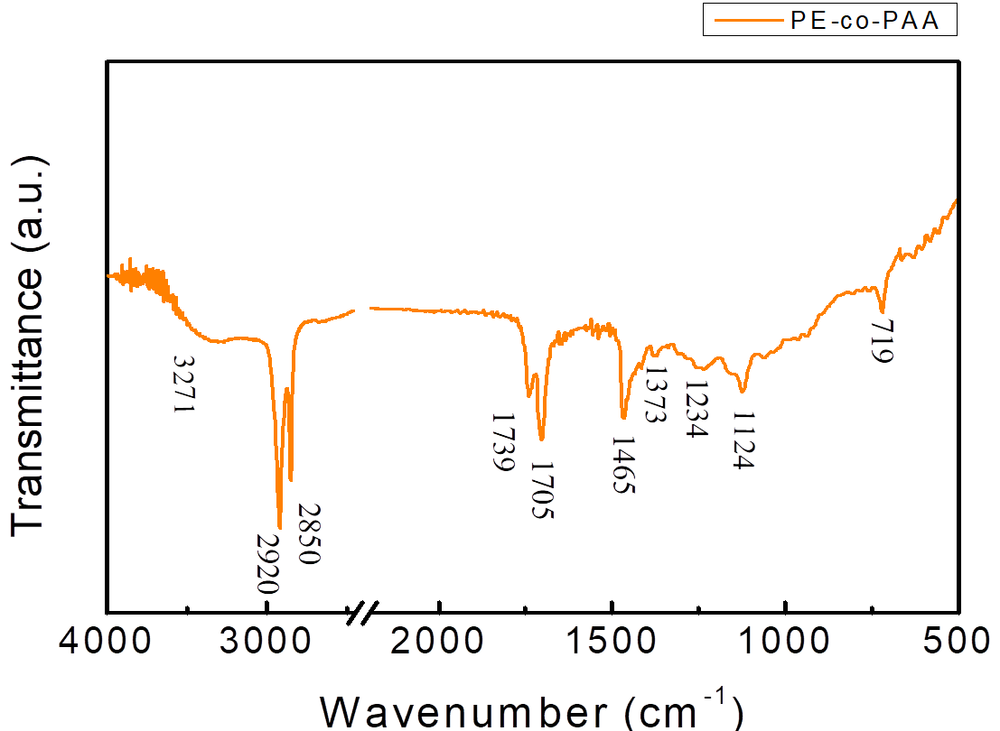
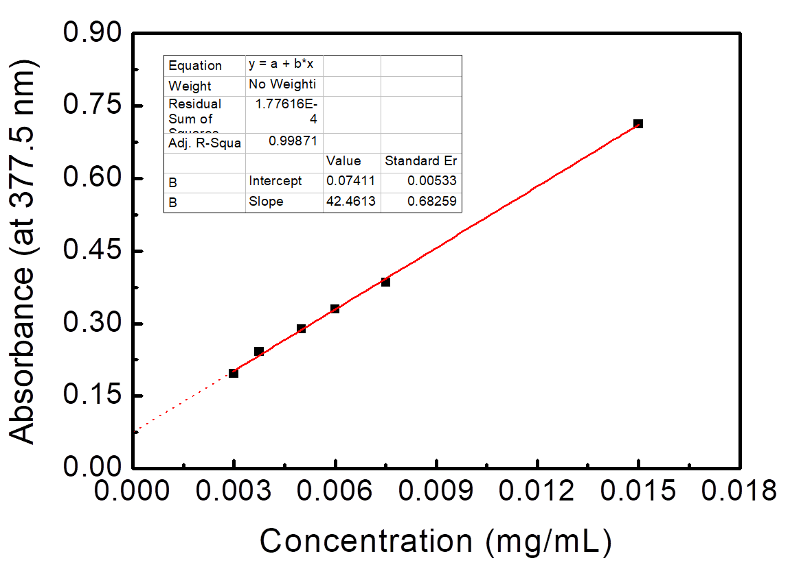

Analysis
Synthesis and Characterization of
Nano-Magnetic Carriers
Results
Transmission electron microscope (TEM) of NMBs and PE-co-PAAB41@Fe3O4 Individual NMBs with clean boundaries could be observed by TEM, as shown in Figure 1, and the NMBs were close to each other forming a cluster with small gaps between each other. The average diameter of NMBs was 9.8 nm by comparing each nanoparticle with the scale bar. Individual NMBs of PE-co-PAAB41@Fe3O4 couldn’t be recognized, as shown in Figure 2, since NMBs were tightly wrapped by a film of PE-co-PAAB41. The results were matched to our expectation which the form of NMBs should change after being coated with PE-co-PAAB41, indicating that coating of PE-co-PAAB41 onto NMBs was successful.
Figure 1. TEM of NMBs
Diluted magnetic iron oxide nanoparticle solution was vibrated by the supersonic vibration machine to separate magnetite clusters, applied onto a copper mesh grid, and observed under TEM magnified by 400K. The average diameter of nanoparticles was 9.84 nm shown in the inset at the upper right.
Figure 2. TEM of PE-co-PAAB41@Fe3O4
Diluted PE-co-PAAB41@Fe3O4 solution was vibrated by the supersonic vibration machine to separate the clusters, then applied onto a copper mesh grid and observed under TEM magnified by 200K. Individual nanoparticle was unable to be discerned.
FTIR spectra of NMBs
The chemical formula of NMB was Fe3O4 and iron could lead to a peak of FTIR spectrum at about 580 cm-1. There was a strong peak at 588 cm-1, as shown in Figure 3, indicating that the synthesis of NMBs was successful. The peaks at 3422 and 1688 cm-1 respectively represented the stretching vibration and bending vibration of O-H, which were resulted from the existence of H2O. In conclusion, the NMBs were successfully synthesized according to the FTIR spectra.
Figure 3. FTIR spectra of NMBs
Dried magnetic iron oxide nanoparticles along with KBr(s) were ground into fine powder which was made into a pellet and the sample was run while KBr(s) was set as background. The free O H stretching vibration was observed at 3422 cm-1 as the peak at 1638 cm-1 corresponded to the bending vibration of O-H. The vibration of iron oxide was observed at 588 cm-1.
FTIR spectra of PE-co-PAA
The peak at 1705 cm-1, as shown in Figure 4, was corresponded to the stretching vibration of C=O and matched the expectation of having an intense peak near 1700 cm-1 which was resulted from C=O of PAA. The peaks at 2950 and 2850 cm-1 were resulted from symmetric and asymmetric saturated C-H, which matched the expectation of PE-co-PAA having two types of C-H bonds. In addition, the peak at 1465 cm-1 was corresponded to the bending vibration of C-H which also matched the expectation of C-H bonds in PE-co-PAA. Lastly, peaks at 1324 and 1134 cm-1 were resulted from bending vibration of O-H and stretching vibration of C-O respectively, and both of which matched the expectation since carboxylic acid was present in PAA. In conclusion, the material being examined by FTIR was definitely PE-co-PAA as it contained all the functional groups that should be measured in PE-co-PAA.

Figure 4. FTIR spectra of PE-co-PAA
PE-co-PAA along with KBr(s) was ground into fine powder which was made into a pellet and the sample was run while KBr(s) was set as background. The peak at 3271 cm-1 represented the O H group. The intense peak at 2920 and 2850 cm-1 respectively showed symmetric and asymmetric saturated C-H stretching vibration. The C=O stretching vibration was observed at 1705 cm-1 while the C H bending vibration was observed at 1465 cm-1. The peak at 1234 and 1124 cm-1 represented the O-H bending vibration and C-O stretching vibration, respectively.
FTIR spectra of PE-co-PAAB41@Fe3O4
For FTIR of PE-co-PAAB41@Fe3O4, we expected the spectra to show peaks that were presented in both Fe3O4 and PE-co-PAA, which were one peak at approximately 580 cm-1 for Fe3O4 and also peaks at about 3400, 2950, 2850, 1700, 1465, 1300, and 1120 cm-1 for PE-co-PAA. As shown in Figure 5, the peaks of expectation could all be observed from the spectra, indicating that coating of PE-co-PAA onto NMBs was successful.

Figure 5. FTIR spectra of PE-co-PAAB41@Fe3O4
Dried PE-co-PAAB41@Fe3O4 along with KBr(s) were ground into fine powder which were made into a pellet and the sample was run while KBr(s) was set as background. The peak at 582 cm-1 represented the NMBs as the peaks at 3418, 2928, 2856, and 1747 cm-1 represented the film of coated PE-co-PAAB41.
UV-Vis spectra and standard curve of NMB aqueous solutions
As shown in Figure 6, as concentration of the NMB aqueous solution increased, the absorbance tended to increase. The standard curve of concentration versus absorbance was obtained initially by calculating the intersection point of tangent lines from the start point and end point of the “shoulder”. Afterwards, six points that intersected with a perpendicular line drawn from the intersection point to the x-axis were used to draw the standard curve, as shown in Figure 7
Figure 6. UV-Vis spectra of NMB aqueous solutions
NMB aqueous were diluted by DI water into the concentrations of 0.015, 0.0075, 0.006, 0.005, 0.00375, and 0.003 mg/ml, vibrated by supersonic vibration machine to evenly distribute the nanoparticles, and examined by UV-Vis spectrum.

Figure 7. Standard curve of NMB aqueous solutions versus absorbance at 377.5 nm in UV-Vis spectrum
Absorbance of six different NMB aqueous concentrations at 377.5 nm was utilized to form a standard curve. The R-square value was 0.99871.
Grain size analysis of NMB aqueous solutions
The result of grain size analysis indicated that as the concentration of NMB aqueous solution decreased, the estimated grain size increased, as shown in Figure 8, which didn’t match the expectation of NMB aqueous solution with lower concentration showing smaller NMB size.
Figure 8. Grain size analysis of NMBs aqueous solutions
NMB aqueous solutions were diluted by DI water into the concentrations of 0.015, 0.006, 0.00375, and 0.003 mg/mL, vibrated by supersonic vibration machine to evenly distribute the nanoparticles, and examined by grain size analyzer.
Figure 9. Standard curve of glutathione concentration
The net slopes were calculated by dividing the absorbance by incubation time. The concentration of each point was 0, 0.0078, 0.0156, 0.031, 0.063, 0.125, 0.25 and 0.5 µM. The R-square value was 0.99904.
Figure 10. TEM of platelets treated with 0.1% Triton X-100
The platelets were treated with 0.1% Triton X-100 to downsize the platelets, which were applied onto a copper mesh grid, and observed under TEM magnified by 200K. The average diameter of individual platelets patch was 48 nm.
Discussion
TEM of magnetic iron oxide nanoparticles and PE-co-PAAB41@Fe3O4
TEM was utilized in order to know the actual size and shape of the magnetic iron oxide nanoparticles, and due to magnetic force nanoparticles were observed as clusters. The average diameter of NMBs was obtained by calculating particles that had clear boundaries; as for the dark portions within the cluster, they were resulted from overlapping of nanoparticles and were not included in the calculation of average diameter. As for the NMBs having nonequivalent sizes, this is a consequence of inconsistent reaction conditions such as rising of solution temperature as NaOH(aq) was added or the quantitative difference between each NaOH(aq) drip.
FTIR of magnetic iron oxide nanoparticles, PE-co-PAA, and PE-co-PAAB41@Fe3O4
FTIR was utilized to assess functional groups of products from each step so as to provide detailed information about the quality of each sample.
Peaks at 3422 and 1638 cm-1, as shown in Figure 3, indicated that water is present in the sample pellet. The solution for decreasing the peaks was to keep the surrounding area as dry as possible and to place the sample pellet in a humidity control cabinet for a longer period of time. For PE-co-PAA, as shown in Figure 4, four different covalent bonds were measured by the spectra with each covalent bond showing two peaks since the infrared radiation induced two kinds of vibrations from each covalent bond.
FTIR of PE-co-PAAB41@Fe3O4, as shown in Figure 5, was expected to show combination of all intense peaks from Figure 3 and 4; however, as the amount of NMBs surpasses that of coated PE-co-PAAB41 shield, peaks corresponded to PE-co-PAAB41 appeared to be less intense and accurate.
UV-Vis spectrophotometry of NMBs aqueous solutions
While chemical bonds are exposed to UV light, stimulation of π-π* and n-π* results in absorbance peak in UV spectra, and based on Beer’s Law, when measure condition remains the same, absorbance is proportional to the concentration. The peak of UV-Vis spectra, as shown in Figure 6, wasn’t recognizable; nevertheless, by knowing the intersection point of the tangent lines from the start point and end point of the “shoulder”, we were able to create a standard curve of concentration versus absorbance at a constant wavelength. The R2 of the standard curve was close to one which indicated that NMBs suspended well in water; additionally, the reason why the extension line didn’t cross through (0,0) was that NMBs didn’t dissolve in water.
Grain size analysis of NMB aqueous solutions
The result of grain size analysis, as shown in Figure 8, showed that the estimated grain size of NMBs was significantly larger than the average diameter calculated from the TEM result. Due to magnetic force, NMBs aggregated as clusters and the grain size analyzer detected the aggregated form of NMBs which led to the difference. In addition, it has been indicated that as concentration decreases the estimated grain size increases and the reason for that was molecular surface energy rises when concentration decreases, and with stronger surface energy NMBs tended to aggregate.
Expression of recombinant rhodostomin for αΙΙbβ3 detection
Results
Transformation of pGST-RHO(RGD) and pGST-RHO(RGE) into BL21 competent cells
In order to obtain recombinant proteins of rhodostomin for detection of integrin αΙΙbβ3, we transformed plasmids which were provided by Professor S.J. Lo’s laboratory into BL21. An original concentration of plasmids DNA and 10 time dilution of plasmids were separatedly transformed into E. coli (Figure 1) and ten of single colony was picked up for protein expression test (Figure 2).
Figure 1. Bacteria colonies containing pGST-RHO(RGD) and pGST-RHO(RGE)
The plates on the right showed transformed colonies from 10X dilution of plasmids of pGST-RHO(RGD) and pGST-RHO(RGE), respectively. The protein expressed by E. coli colonies consist of pGST-RHO(RGD) and pGST-RHO(RGE) was analyzed by SDS-PAGE, a prominent protein band around 32 kDa was observed in IPTG induced conditions (lane 2 and 4) but absence in non-IPTG induced conditions (lane 1 and 3) indicated that RGD and RGE synthesized by E. colican be induced properly by IPTG.
Figure 2. Bacteria protein profiles analyzed by SDS-PAGE
Bacteria containing pGST-RHO(RGD) (lane 1 and 2) and pGST-RHO(RGE) (lane 3 and 4) were added with or without IPTG and subjected to SDS-PAGE analysis. Protein markers in kDa are indicated on the left side of gel.
SDS-PAGE analysis and quantitation of purified recombinant of rhodostomin
Glutathione conjugated Sepharose beads were used to enrich recombinant rhodosomin from the E. coli cell lysate, which were then analyzed by SDS-PAGE following by Coomassie blue staining (Figure 3). In order to quantify the amount of proteins enriched, we performed BSA titration analysis using SDS-PAGE (Figure 4).
Figure 3. SDS-PAGE analysis following Coomassie blue staining of glutathione-Sepharose beads enrichment of rhodostomin
Recombinant proteins enriched by glutathione-Sepharose beads from E. coli lysate were loaded in various volume of 5 µl (lanes1 and 4), 2 µl (lanes 2 and 5) and 1 µl (lanes 3 and 6). RGD (lanes 4, 5 and 6) and RGE (lane 1, 2 and 3) indicate the recombinant proteins. Protein markers in kDa are shown on the left side of gel. In addition to the major bands around 32 kDa, there are several minor bands. The amount of recombinant protein is approximately 300 ng/µl.
Figure 4. BSA quantitation by SDS-PAGE following by Coomassie blue staining.
Series dilutions of BSA were loaded from lane 1 to lane 9 with the protein quantity of 10 µg, 5 µg, 1 µg, 0.5 µg, 0.1 µg, 0.05 µg, 0.01 µg, 0.005 µg, 0.001 µg, respectively.
A major band of 68 kDa was observed at lane 1, 2, 3 and 4 but barely detected in lane 5, suggesting that BSA in less than 100 ng is undetectable by SDS-PAGE and the protein markers shown at the most left lane are about 100 ng, which can be used for quantitation of purified recombinant proteins of rhodsotmin in Figure 3.
Biological function assay of recombinant rhodostomin proteins.
Two functional assays for recombinant proteins: (a) platelet lysate pull-down and (b) cancer cell attachment assay were performed. Platelet lysates were incubated with various amount of recombinant proteins bound on glutathione conjugated Sepharose beads. The pull-down extracts were then analyzed by western blot (Figure 5). To test whether cancer cell membrane contains integrins which can be recognized by rhodostomin proteins, we performed cell attachment assay and results are shown in Figure 6.
Figure 5. GST pull-down assays of platelet lysate.
Input platelet lysate (lane 1) was incubated with various amounts (indicated above the gel) of GST–RHO(RGD) (lane 2, 3 and 4) or GST–RHO(RGE) (lane 4, 6 and 7) which were conjugated with glutathione beads following by western blot analysis. The total protein concentration of platelets in 5 µg was applied in each condition.
The input of integrin αΙΙb band is observed at 130 kDa. The RGD pull-down result at lane 2, 3 and 4 can obtain the same band at 130 kDa, indicating that the GST–RHO(RGD) can bind to the integrin αΙΙb. However, unexpectedly, the RGE pull-down result also showed a similar binding to integrin αΙΙb.
Figure 6. Cell attachment assay.
HEK 293 and cancer cells HeLa were seeded in one to two hundred per microliter onto pre-coated coverslips. After 15 minutes incubation, unattached cells were removed by PBS washing. No significant difference in cell number was observed on RGD and RGE recombinant protein coated coverslips.
BluBox detection of cancer cell integrin biomarkers by Nano-Magnetic Beads coated with GST-RHO(RGD)
Nano-Magnetic Beads coated with GST-RHO(RGD) or GST-RHO(RGE) were equally mixed with platelet samples or cell samples which were pretreated with RIPA lysis buffer. Ten microliters of the mixture were loaded into tested cartridge and detected by BluBox. The read out was converted the amount of total protein of platelets or cell number. Results shown in Figure 8 and Figure 9 are not consistent as we predicted using the BluBox detection of cancer cells or normal cells.
Figure 7. BluBox detection of integrin on fragmented platelet membrane.
Solution of nano-magnetic beads conjugated with integrin αIIb antibodies and IgG (1mg/ml) were both diluted by fifty folds. Platelet sample was lysed by RIPA lysis buffer, diluted into three different concentrations, and the protein concentration was measured. Five microliter of the three diluted platelet samples were mixed with 5 μl of the diluted nano-magnetic bead solution, loaded into a cartridge, and detected by BluBox. The total amount of protein loaded into the cartridge was 12.5, 50, and 500 ng, respectively.
Figure 8. BluBox detection of integrin on HeLa cell membrane.
Solution of nano-magnetic beads conjugated with GST-RHO(RGD) and GST-RHO(RGE) were both diluted by fifty folds. One hundred thousand of HeLa cells sample were diluted into three different cell counts 100, 1000, and 10000 lysed by 100 μl RIPA lysis buffer. Five microliter of the three diluted HeLa cell samples were mixed with 5 μl of the diluted nano-magnetic bead solution, loaded into a cartridge, and detected by BluBox.
Figure 9. BluBox detection of integrin on HEK 293 cell membrane.
Solution of nano-magnetic beads conjugated with GST-RHO(RGD) and GST-RHO(RGE) were both diluted by fifty folds. One hundred thousand of HEK 293 cells sample were diluted into three different cell counts 100, 1000, and 10000 lysed by 100 μl RIPA lysis buffer. Five microliter of the three diluted HEK 293 cell samples were mixed with 5 μl of the diluted nano-magnetic bead solution, loaded into a cartridge, and detected by BluBox.
Discussion
As previous studies showed that GST-RHO(RGD) can specifically bind to platelet integrin αΙΙbβ3 by pull-down assay while GST-RHO (RGE) can not bind to integrin. In this project, results of pull-down and cell attachment assays of GST-RHO(RGD) were consistently to previous works. Unexpectedly, GST-RHO(RGE) behaved similarly to GST-RHO(RGD). A possible explanation is the expression clone of pGST-RHO(RGE) was contaminated with pGST-RHO(RGD). We need to verify in the future.
Platelet preparation and protein analysis.
Blood smear of erythrocytes and platelets.
The overall picture was erythrocytes surrounded. Accounting for the erythrocytes majority, the platelets wasn’t clear enough to see and could just only see some blurry particles nearby the erythrocytes were platelets (Figure 1). The length of platelets was 2-3 µm and the length of erythrocytes was 6-8 µm.
Figure 1. Whole blood cells under 630X differential interference contrast microscopy.
The whole blood (5 µl) from Sprague Dawley (SD) rat was loaded on the slide and used the other slide to make the smear. The red blood cells (RBCs) is around 6~8 µm and the platelet is around 2~3 µm which was pointed by the red line.
Taking a close look, some erythrocytes appeared swell because the variation of ion concentration changed the environment constantly. The platelets were activated so the surface of platelets looked thorny.
Figure 2. Whole blood cells under 630X differential interference contrast microscopy.
The RBC looked swelling because of the low osmotic pressure. The platelets aggregated together.
Western blot analysis of integrin αΙΙb in detergent-solubilized platelets.
Four SD white rats were used in this study. We separated them in two cages and recognized them as black stain tail rat (No. 1) vs. white tail rat (No. 2), and fatty rat (No. 3) vs. thin rat (No. 4. The gradient confirmed a high specificity between integrin αΙΙb and commercial αΙΙb antibody. When the quantity of platelet declined, the western blot detection dropped down (see Figure 3).
Figure 3. Western blot analysis of the integrin αΙΙb in the lysed platelets.
The intact platelets were lysed in RIPA lysis buffer first. The total protein concentration of platelets was loaded proportionally in the wells. The primary antibodies were CD41/ integrin αΙΙb antibodies and were (1:1000) diluted in 1X TBST buffer. Donkey anti-rabbit IgG HRP as the secondary bodies detected the signal of the integrin αΙΙb (125kDa).
Immunoprecipitation analysis of the integrin αΙΙb.
Magnetic beads were conjugated with 0.9 µg integrin αΙΙb antibodies or 5 µg IgG. The complexes of the platelets attached to magnetic beads were reacted with different total protein concentration of platelet. IgG rabbit antibodies were regarded as negative control which could not bind to the integrin αΙΙb.The primary antibodies were CD41/ integrin αΙΙb antibodies in western blot analysis. Donkey anti-rabbit IgG HRP as the secondary bodies detected the signal of the integrin αIIb. Input lane indicated the integrin αIIb molecular weight of 125 kDa, the heavy chain signal of antibodies was located at 50 kDa. The band at 125 kDa was unable to be detected if the total protein less than 0.5 µg was loaded. The nano magnetic beads were also conjugated with integrin αΙΙb and IgG antibodies. The western blot analysis procedure was the same as mentioned above. The signal at 125 kDa indicated that our nano magnetic beads can bind to the platelet integrin αΙΙb specificity see Figure 4.
Figure 4. Western immunoblot analysis of the integrin αΙΙb in the lysed platelets.
The lysed platelets with different concentration (5, 1, 0.5, 0.05 µg) were pulled down by integrin αΙΙb antibodies which were respectively conjugated with (A) Mag-Beads-Protein G and nano-magnetic beads. The primary antibodies were CD41/ integrin αΙΙb antibodies and were diluted (1:1000) in 1X TBST buffer. Donkey anti-rabbit IgG HRP as the secondary antibodies against the integrin αΙΙb antibodies. Input lane was positive control indicated the integrin αΙΙb molecular weight (125kD). IgG rabbit antibodies were regarded as negative control which could not bind the integrin αΙΙb. The heavy chain signal of antibodies was located at 50 kDa.
Discussion
We found out the platelet number vary from four rats based on Table 1 calculation. Each rat had different number of platelets synthesis due to different life and health condition. The result of western blot in Figure 3 indicated the small distinctive platelets integrin number in the equal total protein concentration of platelet.The commercial integrin αΙΙb antibody which could recognize the integrin sequence was highly specifically for the three dimensional integrin αΙΙb and was suitable for the purification in the immunoprecipitation based on the IP western result in Figure 4.